HYD · 실습 가이드설비 지식의 구조와 연결 관계 탐색하기
관계 조회 실습에서는 Neo4j Browser의 설비 예제 그래프를 Cypher로 조회해, 설비 한 대에서 오일 쿨러와 센서, 교체 부품으로 이어지는 경로를 따라갔습니다. 이번에는 포털의 지식 지도에서 같은 종류의 연결을 직접 펼칩니다. 지식 지도는 포털의 에이전트가 판단할 때 꺼내 쓰는 기준 지식입니다. 줄기 단계 가운데 온톨로지 단계입니다.
01 지식 지도 열고 읽는 법 익히기
| 목표 | 설비를 하나 고르고, 이어진 센서와 부품을 펼쳐 노드마다 이름 · 종류, 식별정보와 속성, 관계의 방향을 읽습니다. |
|---|
| 입력 | 포털 지식 지도의 수업 기준 지식. 포털 데이터를 바꾸는 조작은 하지 않고 보기만 합니다. |
|---|
| 할 일 | 설비 → 오일 쿨러 → 유온 센서 → 상태 변수 유온 → 쿨러 코어 → 주 펌프 → 씰 키트를 차례로 열고, 설비를 HYD-02로 바꾼 뒤 Neo4j 예제 그래프와 견줍니다. |
|---|
| 성공 기준 | 노드 하나를 볼 때 종류, 식별정보, 속성, 관계 방향을 차례로 짚고, 예제 그래프와 같은 점과 다른 점을 지도에서 가리킬 수 있습니다. |
|---|
포털을 열고 왼쪽 메뉴의 지식 묶음에서 지식 지도를 누르세요. 위쪽 고르기 칸 가운데 첫 번째가 설비이고, HYD-01이 골라져 있습니다. 그 옆의 이름 공간(수업 기준)과 이상 패턴 경로(전체 보기)는 몰라도 되는 칸이니 그대로 둡니다. 볼 곳은 설비 칸과 그 아래 통계 줄입니다.
통계 줄에는 지도에 그려진 항목과 연결의 수가 나옵니다. 항목 하나는 네모로 그린 노드 하나, 연결 하나는 선으로 그린 관계 하나입니다.
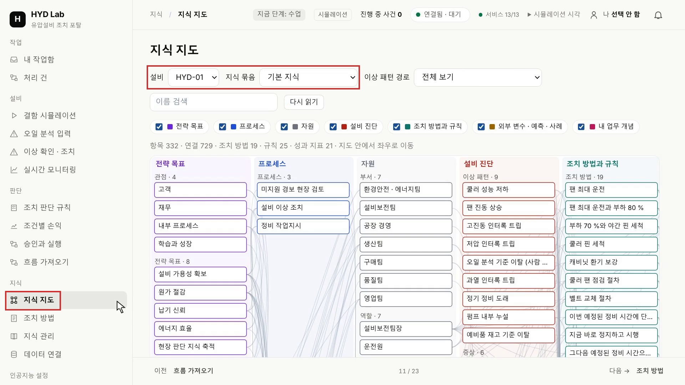
왼쪽 메뉴의 지식 지도, 설비 칸의 HYD-01, 항목 · 연결 수가 적힌 통계 줄. 사진에서는 항목 332 · 연결 729입니다 · 누르면 크게 보기지도는 색이 다른 세로 칸으로 나뉘고, 칸 하나가 지식의 한 층입니다. 설비 · 센서 · 부품은 자원 칸에 있습니다. 자원 칸이 넓게 보이도록 위쪽 층 단추에서 전략 목표, 프로세스, 외부 변수 · 예측 · 사례, 내 업무 개념을 눌러 끄세요. 단추를 끄면 그 칸이 화면에서 접힐 뿐이고 지식이 지워지지는 않습니다.
자원 칸 안의 작은 회색 머리글(설비 · 1, 구성 요소 · 6처럼 이름과 숫자)이 클래스이고, 숫자는 그 클래스에 속한 노드의 수입니다. 머리글 아래 줄지어 있는 노드 하나하나가 인스턴스입니다.
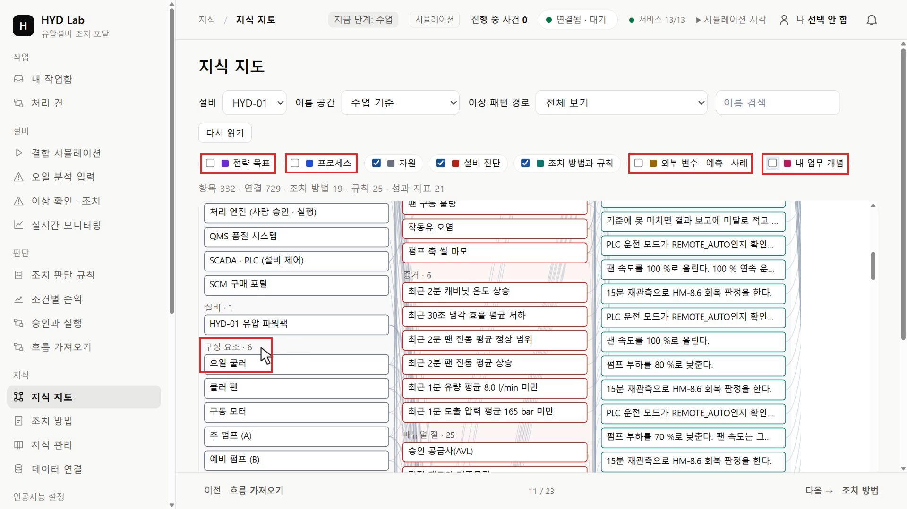
끈 층 단추 넷과 자원 칸의 클래스 머리글 구성 요소 · 6. 그 아래 오일 쿨러, 쿨러 팬, 주 펌프 (A) 같은 노드가 인스턴스입니다 · 누르면 크게 보기확인 지도에 자원, 설비 진단, 조치 방법과 규칙 세 칸이 남고, 자원 칸에서 구성 요소 머리글과 그 아래 노드를 찾을 수 있습니다.
02 설비를 골라 상세 칸 읽기
목적 설비 노드 하나를 골라 상세 칸에서 종류 · 이름 · 속성과 관계 두 묶음을 읽습니다. 입력 설비 칸의 HYD-01과, 01에서 층 단추 넷을 끈 지도.
오른쪽 이름 검색 칸에 유압 파워팩을 입력하세요. 검색에 맞는 노드가 노랗게 바뀌고 지도가 그 자리로 옮겨 갑니다. 설비 클래스 아래 노드는 하나뿐입니다. 위쪽에서 HYD-01을 골랐기 때문에 지도에는 그 설비 한 대만 그려집니다. 노란 HYD-01 유압 파워팩을 누르세요.
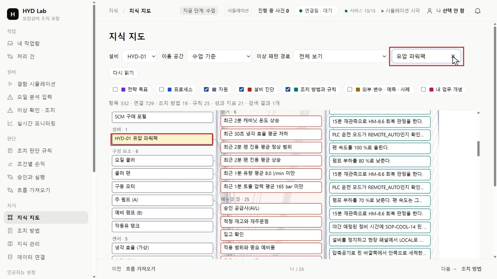
이름 검색 칸의 유압 파워팩과 노랗게 표시된 HYD-01 유압 파워팩 노드 · 누르면 크게 보기누른 노드와 이어진 선이 진하게 바뀝니다. 화면을 아래로 내려 지도 아래 상세 칸을 보세요. 맨 위 작은 글씨가 종류(클래스)인 설비이고, 그 아래 큰 글씨가 이름입니다. 그 아래 표가 속성으로, 왼쪽이 속성 이름, 오른쪽이 값입니다. code 칸(설비 코드)의 HYD-01이 이 설비를 다른 설비와 구별하는 식별정보입니다. forecast로 시작하는 예측 모형 줄들은 몰라도 됩니다.
오른쪽 관계는 두 묶음입니다. 나가는 관계는 이 설비에서 출발해 다른 노드로 가는 선이고, 들어오는 관계는 다른 노드에서 출발해 이 설비로 들어오는 선입니다. 나가는 관계에는 구성 요소 여섯 줄(작동유 탱크, 주 펌프 (A), 구동 모터, 예비 펌프 (B), 쿨러 팬, 오일 쿨러)이 있습니다. 들어오는 관계에는 대상 설비라는 이름으로 업무 흐름 세 개가 이 설비를 가리킵니다. 흐름의 내용은 몰라도 되고, 선이 흐름에서 설비로 들어온다는 방향만 봐 둡니다.
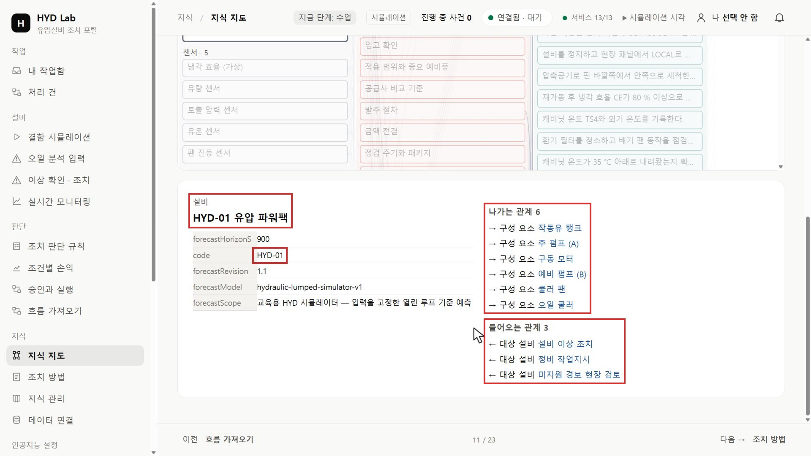
상세 칸의 종류 · 이름, code 값 HYD-01, 나가는 관계 6과 들어오는 관계 3 · 누르면 크게 보기확인 종류 설비, 이름 HYD-01 유압 파워팩, code HYD-01, 나가는 관계 6 · 들어오는 관계 3을 상세 칸에서 짚을 수 있습니다. 상세 칸이 보이지 않으면 화면을 지도 아래로 내립니다.
03 오일 쿨러에서 관계 방향 읽기
목적 관계를 출발 → 관계 이름 → 도착 순서로 읽고, 같은 선을 양쪽 끝에서 봅니다. 입력 02에서 연 HYD-01 유압 파워팩 상세의 나가는 관계 오일 쿨러.
나가는 관계의 오일 쿨러를 누르세요. 상세 칸의 이름을 누르면 그 노드의 상세로 바로 넘어갑니다.
종류는 구성 요소입니다. 쿨러는 설비 한 대가 아니라 설비를 이루는 장치라서 구성 요소 클래스에 들어 있습니다. 속성 표의 aliases 칸(별칭)에는 쿨러, 열교환기가 적혀 있습니다. 부르는 말이 여러 개여도 노드는 하나이고, 별칭을 적어 두면 누가 어떤 말로 찾아도 같은 대상에 닿습니다.
나가는 관계에는 교체 부품 쿨러 코어, 관측 센서 유온 센서와 냉각 효율 (가상)이 있습니다. 관계는 출발한 노드에서부터 출발 → 관계 이름 → 도착 순서로 읽습니다. 오일 쿨러의 관측 센서는 유온 센서, 오일 쿨러의 교체 부품은 쿨러 코어입니다.
들어오는 관계에는 구성 요소 HYD-01 유압 파워팩이 있습니다. 설비 상세에서 나가는 관계로 보였던 바로 그 선을 반대쪽 끝에서 보는 것입니다. 발생 위치 쿨러 냉각 성능 상실은 설비 진단 칸의 고장 유형이 이 쿨러를 가리키는 선입니다.
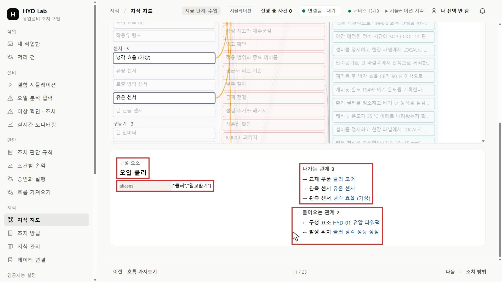
오일 쿨러 상세: 종류 · 이름, 별칭 칸, 나가는 관계 3과 들어오는 관계 2 · 누르면 크게 보기확인 나가는 관계 3(쿨러 코어, 유온 센서, 냉각 효율 (가상))과 들어오는 관계 2(HYD-01 유압 파워팩, 쿨러 냉각 성능 상실)를 출발 → 관계 이름 → 도착 순서로 읽을 수 있습니다. 다른 노드의 상세가 열렸으면 상세 칸 맨 위의 이름을 보고, 그 노드의 들어오는 관계에서 HYD-01 유압 파워팩을 눌러 설비로 돌아간 뒤 오일 쿨러를 다시 누릅니다.
04 센서와 상태 변수 구별하기
목적 이름이 같은 노드를 종류로 구별하고, 기준값이 어느 노드에 붙어 있는지 봅니다. 입력 03에서 연 오일 쿨러 상세의 나가는 관계 유온 센서.
나가는 관계의 유온 센서를 누르세요. 종류는 센서이고, tag 칸(태그)의 TS1이 이 센서의 식별정보입니다. 현장 배관도와 제어 화면에서 이 센서를 가리킬 때 쓰는 이름표이고, Neo4j 예제에서 조건으로 걸었던 태그와 같은 값입니다. unit 칸(단위)은 ℃, virtual 칸(가상 여부)은 false입니다. 실제로 쿨러에 달려 온도를 재는 장치라는 뜻입니다.
들어오는 관계에는 관측 센서 오일 쿨러가 있습니다. 조금 전 쿨러에서 나가던 선이 여기 도착한 것입니다. 데이터 출처 유온은 판단에 쓰는 입력 데이터가 이 센서를 가리키는 선입니다. 이 입력 데이터의 이름도 유온이고, 이어서 볼 상태 변수의 이름도 유온입니다. 이름이 같아도 종류가 다르면 서로 다른 노드이므로, 노드를 읽을 때는 이름과 종류를 함께 읽습니다.
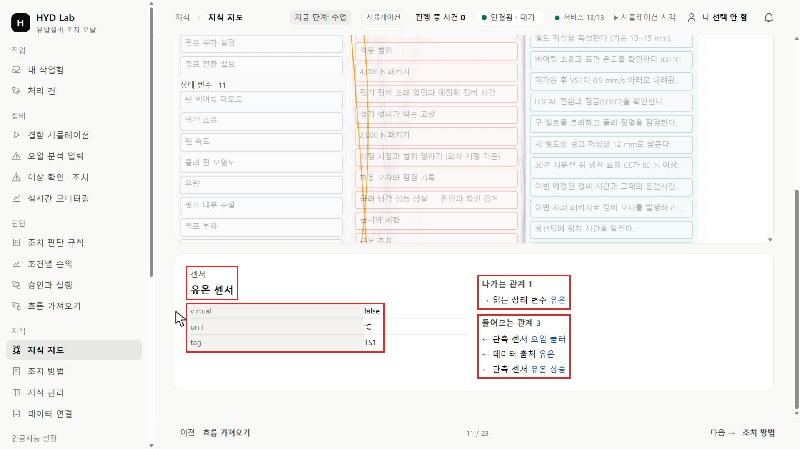
유온 센서 상세: 종류 센서, virtual · unit · tag 칸, 나가는 관계의 읽는 상태 변수 유온과 들어오는 관계 3 · 누르면 크게 보기나가는 관계의 읽는 상태 변수 유온을 누르세요. 종류는 상태 변수입니다. 센서가 재는 장치라면, 상태 변수는 그 장치가 재는 물리량, 곧 작동유의 온도 자체입니다. normal 칸(정상값)은 48, limit 칸(한계값)은 65입니다. 기준값이 센서가 아니라 상태 변수에 붙어 있는 까닭은, 기준이 재는 장치가 아니라 재는 대상인 작동유 온도의 것이기 때문입니다. 별칭 칸의 TS1은 센서의 태그와 같은 글자이지만, 하나는 센서의 태그, 하나는 상태 변수의 별칭입니다. 들어오는 관계에서 읽는 상태 변수 유온 센서를 찾으면 쿨러 → 센서 → 상태 변수로 방향이 한 줄로 이어집니다. 나머지 영향 관계들은 몰라도 됩니다.
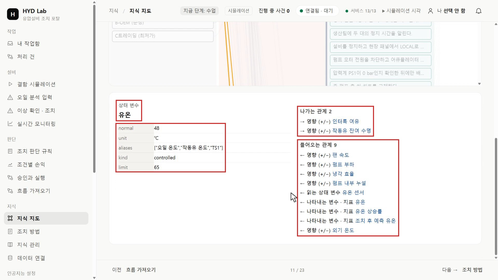
상태 변수 유온 상세: normal 48 · limit 65가 있는 속성 표와 들어오는 관계의 읽는 상태 변수 유온 센서 · 누르면 크게 보기들어오는 관계의 유온 센서를 눌러 센서로 돌아가고, 다시 오일 쿨러를 누른 뒤 냉각 효율 (가상)을 누르세요. 종류는 똑같이 센서인데 virtual 칸이 true입니다. 냉각 효율은 쿨러에 달린 장치가 직접 재는 값이 아니라 다른 값으로 계산해 얻는 항목이고, 쿨러를 지켜보는 관측 항목이라서 같은 센서 클래스에 두고 이 칸으로 구별합니다.
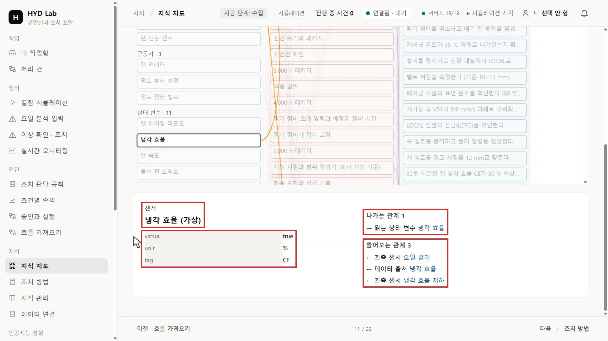
냉각 효율 (가상) 상세: 종류 센서, virtual true · 누르면 크게 보기확인 유온 센서(virtual false, tag TS1)와 냉각 효율 (가상)(virtual true)을 가상 여부 칸으로 구별하고, 정상값 48 · 한계값 65가 상태 변수 유온에 붙어 있음을 짚을 수 있습니다. 유온 센서 상세에는 유온 링크가 둘(나가는 관계의 읽는 상태 변수 유온, 들어오는 관계의 데이터 출처 유온)입니다. 누른 뒤 종류가 입력 데이터로 나오면 들어오는 관계의 유온 센서를 눌러 돌아가 나가는 관계 쪽 유온을 누릅니다.
05 교체 부품과 여러 센서 찾기
목적 부품의 식별정보인 품번을 읽고, 구성 요소 하나에 이어진 센서 여럿을 찾습니다. 입력 04에서 연 냉각 효율 (가상) 상세의 들어오는 관계 오일 쿨러.
들어오는 관계의 오일 쿨러를 누르고, 나가는 관계의 교체 부품 쿨러 코어를 누르세요. 종류는 부품입니다. 쿨러는 설비를 이루는 구성 요소이고, 쿨러 코어는 닳으면 갈아 끼우는 교체 부품이라 서로 다른 클래스입니다. partNo 칸(품번)의 P-CLR-CORE가 이 부품의 식별정보입니다. 이름은 사람마다 다르게 부를 수 있지만 품번은 하나로 정해져 있어, 구매하거나 재고를 찾을 때 품번으로 찾습니다.
나가는 관계에는 공급사 셋(C트레이딩 (최저가), A정밀 (저가), B-OEM (순정))이 있습니다. 이 부품을 어느 회사에서 살 수 있는지 적은 연결입니다. 들어오는 관계에는 교체 부품 오일 쿨러가 있고, 쿨러 핀 오염이라는 원인과 발주 조치 방법들도 관련 부품으로 이 부품을 가리킵니다.
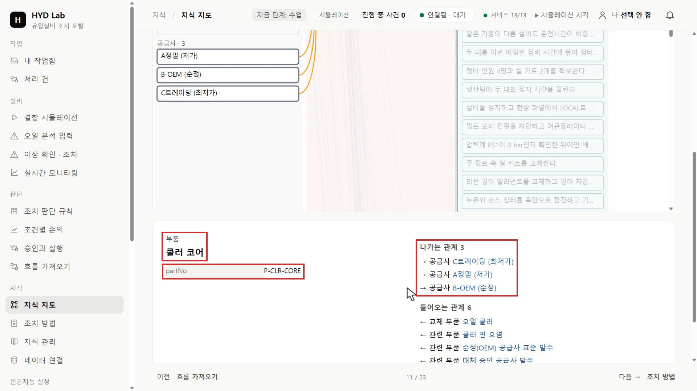
쿨러 코어 상세: 종류 부품, partNo P-CLR-CORE, 나가는 관계의 공급사 셋 · 누르면 크게 보기화면을 올리고 이름 검색 칸의 글자를 지운 뒤 주 펌프를 입력하세요. 노랗게 표시된 주 펌프 (A)를 누르고 상세 칸으로 내려갑니다.
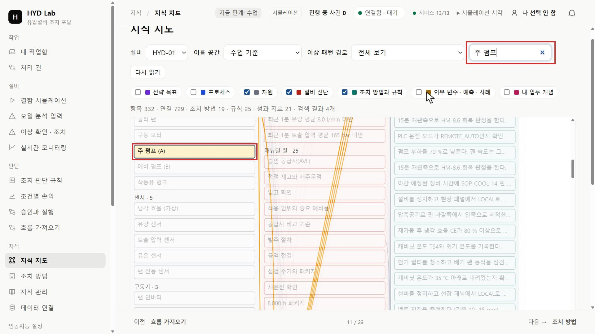
이름 검색 칸의 주 펌프와 노랗게 표시된 주 펌프 (A) 노드 · 누르면 크게 보기나가는 관계 맨 위 교체 부품은 펌프 축 씰 키트이고, 구동 장치라는 관계로 펌프 전환 밸브가 이어집니다. 구동 장치는 설비를 움직이는 쪽의 장치입니다. 그 아래 관측 센서가 유량 센서와 토출 압력 센서 두 줄입니다. 펌프 하나를 두 가지 값으로 지켜보는 것입니다. 센서 하나도 여러 구성 요소를 지켜볼 수 있으니, 관측 센서는 이론에서 배운 다대다 관계입니다.
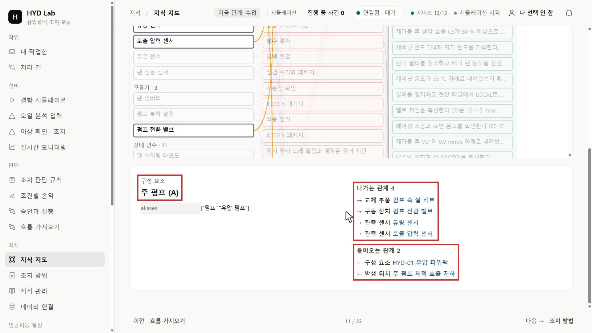
주 펌프 (A) 상세: 나가는 관계 4(펌프 축 씰 키트, 펌프 전환 밸브, 유량 센서, 토출 압력 센서) · 누르면 크게 보기펌프 축 씰 키트를 누르세요. 종류는 부품이고 partNo 칸은 P-PMP-SEAL입니다.
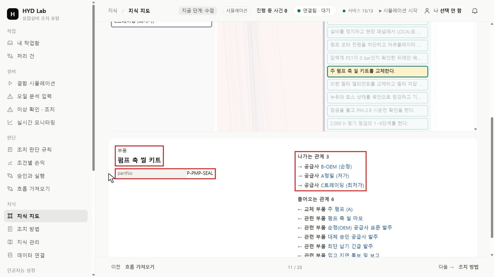
펌프 축 씰 키트 상세: 종류 부품, partNo P-PMP-SEAL · 누르면 크게 보기확인 쿨러 코어 P-CLR-CORE와 펌프 축 씰 키트 P-PMP-SEAL처럼 품번이 서로 달라서, 이름을 몰라도 품번으로 두 부품을 구별할 수 있습니다. 주 펌프를 검색하면 통계 줄에 검색 결과 4개가 나오고 노란 노드가 여러 칸에 걸칩니다. 자원 칸의 주 펌프 (A)를 누릅니다.
06 설비를 바꿔 같은 노드 보기
목적 설비를 바꾸면 지도에서 무엇이 바뀌고 무엇이 그대로인지 봅니다. 입력 01~05에서 본 HYD-01의 오일 쿨러 연결.
화면을 맨 위로 올리고 설비 칸에서 HYD-02를 고르세요. 지도를 다시 읽어 오고, 앞에서 누른 노드의 선택이 풀립니다. 이름 검색 칸의 글자를 지우고 오일 쿨러를 입력한 뒤 노랗게 표시된 오일 쿨러를 누르고 상세 칸으로 내려갑니다.
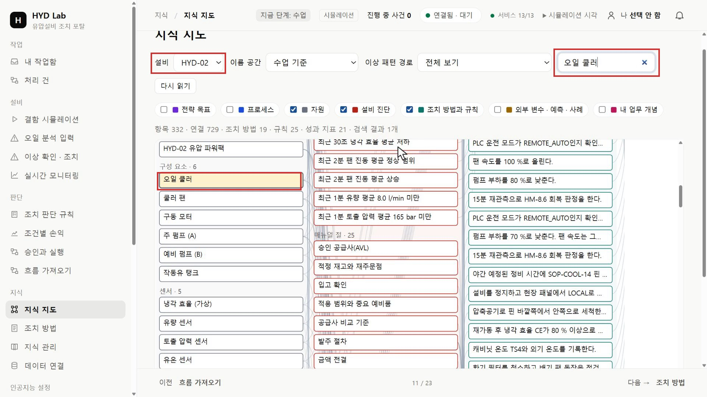
설비 칸의 HYD-02, 이름 검색 칸의 오일 쿨러, 노랗게 표시된 오일 쿨러 노드 · 누르면 크게 보기들어오는 관계의 구성 요소가 이번에는 HYD-02 유압 파워팩입니다. 나가는 관계의 유온 센서와 쿨러 코어는 HYD-01에서 본 것과 같습니다. 이 지식 지도에서 오일 쿨러 노드는 설비마다 따로 있지 않고, 세 설비가 같은 구조라서 이 기종의 오일 쿨러 하나를 세 설비가 함께 가리킵니다. 그래서 이 지도만으로는 HYD-01의 쿨러와 HYD-02의 쿨러를 따로 가리킬 수 없고, 두 설비의 온도 값은 설비 데이터 쪽에서 설비 코드로 나뉩니다.
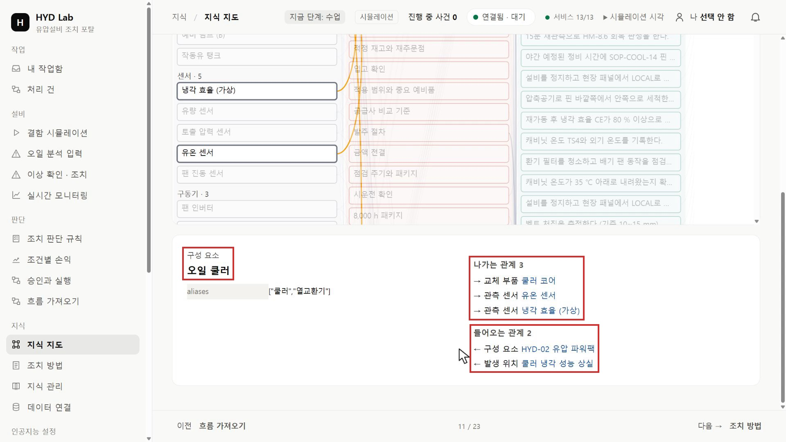
HYD-02를 고른 뒤 오일 쿨러 상세: 들어오는 관계의 구성 요소 HYD-02 유압 파워팩 · 누르면 크게 보기확인 들어오는 관계의 설비만 HYD-02 유압 파워팩으로 바뀌고, 나가는 관계(쿨러 코어, 유온 센서, 냉각 효율 (가상))는 HYD-01과 같습니다. 설비를 바꾸면 앞에서 누른 노드의 선택이 풀려 상세 칸이 사라지고, 검색 칸에는 앞 글자가 남습니다. 검색 칸의 글자를 지우고 오일 쿨러를 다시 찾습니다.
07 Cypher 예제 그래프와 비교하기
목적 Neo4j 예제 그래프와 지식 지도의 같은 점과 다른 점을 지도에서 가리킵니다. 입력 06에서 HYD-02로 바꾼 지도와, 관계 조회 실습의 예제 그래프(노드 20개 · 관계 19개).
상세 칸 맨 위를 보면, Neo4j 예제 그래프에서 노드를 누르면 보이던 식별자(id) 줄이 이 상세 칸에는 없습니다. 그래도 지도는 식별자를 알고 있습니다. 화면을 올리고 이름 검색 칸에 예제에서 쿨러를 찾을 때 쓴 식별자 comp:cooler를 입력하세요. 오일 쿨러 노드 하나가 노랗게 표시되고, 통계 줄에 검색 결과 1개가 나옵니다. 예제 그래프의 쿨러와 이 지식 지도의 쿨러가 같은 식별자, 같은 이름을 쓰는 같은 대상이라는 뜻입니다.
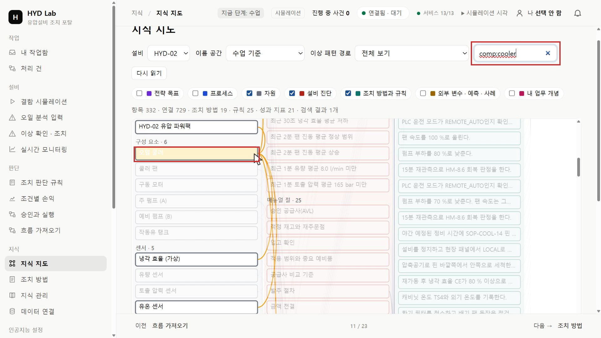
이름 검색 칸의 comp:cooler와 노랗게 표시된 오일 쿨러 노드 하나. 이미 누른 노드라 글자가 흐리게 보입니다 · 누르면 크게 보기같은 점: 예제에서 Asset, Component, Sensor 레이블로 보던 구분이 이 지도에서는 설비, 구성 요소, 센서라는 클래스 이름으로 보입니다. MONITORED_BY 관계는 관측 센서로, USES_PART 관계(부품을 사용한다는 관계)는 교체 부품으로 적혀 있습니다. 이름만 한글로 보여 줄 뿐 같은 관계입니다.
다른 점: 예제 그래프에는 노드 20개, 관계 19개와 설비 구조만 있었습니다. 이 지도는 항목이 300개가 넘고, 같은 설비 구조 옆의 설비 진단 칸과 조치 방법과 규칙 칸이 쿨러와 센서에 선으로 이어져 있습니다.
이름 검색 칸에 작동유 탱크를 입력하고 노란 작동유 탱크를 누른 뒤 상세 칸으로 내려가세요. 나가는 관계의 교체 부품에 리턴 필터 엘리먼트가 있습니다. 예제 그래프에서는 작동유 탱크에 이어진 부품이 없었습니다.
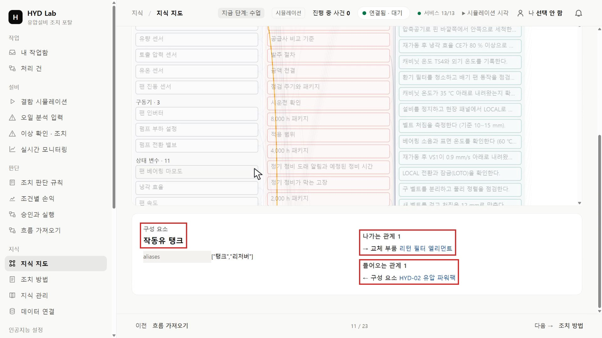
작동유 탱크 상세: 나가는 관계의 교체 부품 리턴 필터 엘리먼트 · 누르면 크게 보기이름 검색 칸에 예비 펌프를 입력하세요. 노란 노드가 둘이면 자원 칸의 예비 펌프 (B)를 누르고 상세 칸으로 내려갑니다. 예제에서 센서와 이어지지 않아 집계 표에 나오지 않았던 예비 펌프는 이 지도에서도 관측 센서가 없습니다. 대신 구동 장치라는 관계로 주 펌프에서 본 펌프 전환 밸브가 이어져 있습니다. 예제 그래프에는 이 밸브가 없어서 이 연결도 보이지 않았습니다.
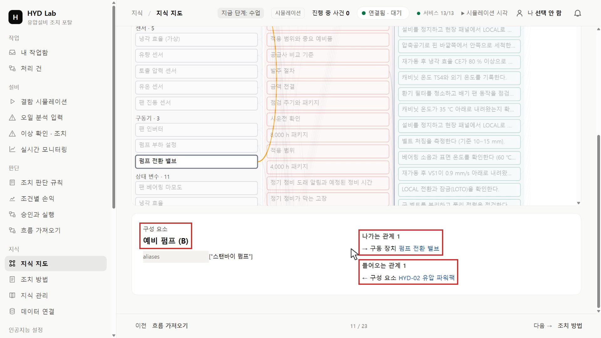
예비 펌프 (B) 상세: 나가는 관계의 구동 장치 펌프 전환 밸브, 관측 센서 없음 · 누르면 크게 보기확인 Neo4j 예제는 실습용으로 따로 준비한 작은 데이터베이스이고, 지식 지도는 포털이 판단에 쓰는 기준 지식입니다. comp:cooler로 같은 오일 쿨러를 찾고, 예제에 없던 연결(작동유 탱크 → 리턴 필터 엘리먼트, 예비 펌프 (B) → 펌프 전환 밸브)을 지도에서 가리킬 수 있으면 이 실습을 마친 것입니다. 예비 펌프를 검색하면 통계 줄에 검색 결과 2개가 나오므로 자원 칸의 예비 펌프 (B)를 누릅니다.